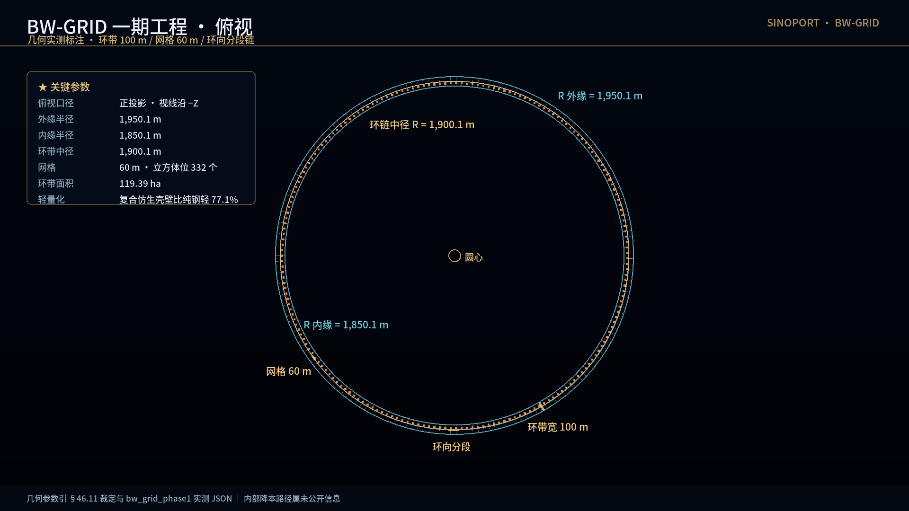
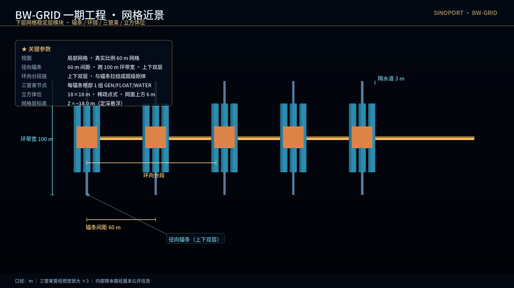
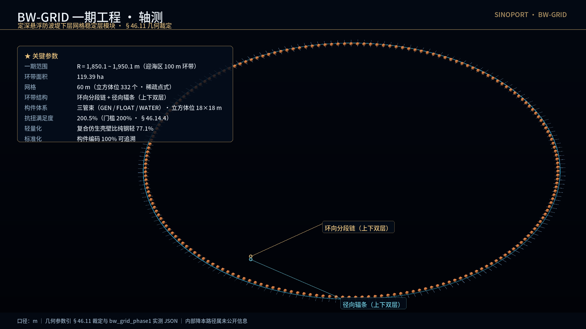
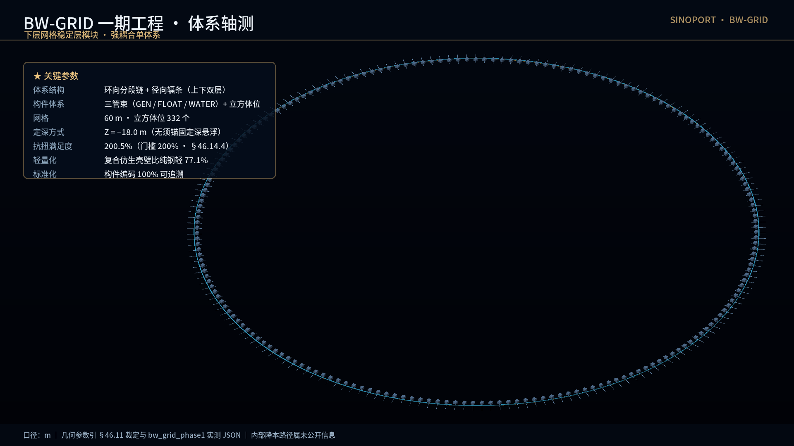

Every number below is produced by a script. No figure in this project is hand-written; any FAIL returns a non-zero exit code.
| Item | Value | Verification |
|---|---|---|
| Wave-sculpting pyramid | 7 rows 1/1/2/3/5/8/13 × 4 slopes = 132 bores, dia D900 | 26 / 26 PASS |
| Modelling solid | single solid, isValid() = True, 132 R450 cylinder faces |
FreeCAD 1.1 (OCC) |
| Semi-circular breakwater | single-side 381 m = 81 + 200 + 100, chord R = 1,650 | PASS |
| Breakwater openings | 9 × 150 m (26 % of arc length) | PASS |
| 9 berths | total width 513 m, all inside the R = 1,650 circle | 9 / 9 PASS |
| Berth clearance | min 334.9 m ≥ red line 300 m | PASS |
| Wave attenuation | 15 m → < 0.6 m (25×) | analytic estimate |
| Whole-port migration | 1,200 m seaward | kinematic demo |
| Shore landscape | winter / summer dual state, build order A→B→C→D | 23 / 23 PASS |
Material parameters matter not as a list of numbers, but as evidence for engineering claims. Every statement below is backed by measured values from SINOPORT-GEO-COD-26-001-V6.4-r1 Chapter 46. This project has no hand-written PASS.
| Objective | Quantified Evidence | Verification |
|---|---|---|
| Lightweighting | Composite 1,800 kg/m³ — 77.1% lighter than steel 7,850; bamboo-plastic is 83.4% lighter than steel (ratio 1:6.04) | Formulation |
| Self-floating | MOD-DM equivalent density 0.9253 t/m³, 9.7% lighter than seawater — the structure floats on its own; ballast is only trim, not a precondition | Measured |
| Standardization | MAT-{{component}}-{{formula}}-{{version}}, 100% traceable;
20×42=840 m³ exact division;
column-wall 27,000 mm = platform side, zero lap waste |
Interlocked |
| Safety | Reserve redline 60%~80%; MOD-STD 74.40%, MOD-DM after ballast 70.00% at band centre; dead weight must fall within 896.7~1,793.3 t | Inverse-solved |
| Economy | 77.1% lighter → material, transport and dry-dock all saved at once; tank slack 0 m³ | Material |
| Durability | Compressive ≥C40, flexural ≥5 MPa, impermeable ≥P8; bamboo anti-rot, basalt crack-resistant; 8 acceptance criteria tested | V6.3 §8.8 |
| Efficiency | MOD-STD 8 steps / MOD-DM 7 steps assembly; ballast window covers the whole reserve band; parametric batch pre-fabrication | Process |
MOD-STD empty-tank reserve is 74.40%, whose upper margin is only 5.60 pp — inside the redline but not generous. This page does not claim MOD-STD has "ample margin". What is truly symmetric is MOD-DM at 70.00% after ballasting (10 pp each side).
Also: the pyramid's 11.45 m is a breaking height, not a blocking height. An 18-grade typhoon's 15 m wave is carried jointly by pyramid + cube + turbine + springs + the MOD-DM body.
The breakwater floor is not a solid base slab but a tensioned cable grid (BW-GRID): radial spokes and hoop chain segments, laid in two layers under a standardised coding scheme, anchoring the floating houses, sphere vessels and pyramid cubes into the five-way spring power system — while keeping the flow path under the breakwater open. Below is the measured geometry of Phase 1 (the 100 m seaward band).
Orthographic, dimensioned: the three concentric radius circles can be read back to the fixed design radii, and the modular grid layout can be counted and reproduced point by point.

Rendered at true scale (60 m grid): each spoke root carries one three-pipe bundle (GEN / FLOAT / WATER); the cube seats sit at 60 m grid intersections in a sparse point pattern.

| Path | Measure | Effect | Constraint |
|---|---|---|---|
| Lightweighting | Composite shell + hollow truss groove structure | Shell density 77.1% lighter than plain steel; material, transport and dry-dock all saved at once | Buoyancy reserve redline 60%~80% |
| Standardisation | Component type code + formulation code + version code | Coding 100% traceable; geometry, assembly and acceptance criteria map one to one | Cross-segment namespace kept independent |
| Construction logistics | Modular batch pre-fabrication of the tensioned system | Offshore tensioning time and anchor count reduced significantly | Torsion margin must stay ≥ 200% |
| Combined | All of the above | Phase 1 total cost down by roughly 60% (order-of-magnitude) | Torsion 200.5% ✓ |


Widening the hoop spacing does not save cable — total hoop length = mid-radius circumference × layer count, independent of spacing. What it saves is anchor count and offshore tensioning time: a construction-logistics gain, not a material saving.
Down-sizing a cable must reduce pretension to match — keeping the original pretension on a smaller section raises the constant tensile stress well beyond the allowable limit; and down-sizing also reduces torsional capacity, so extra hoop segments are required to compensate.
Unit costs and domestic discounts are order-of-magnitude estimates; fine specifications are derived rather than quoted, not a quotation; the material allowable stress must be confirmed by the manufacturer; the drag load requires flume testing; the torsion figure comes from a simplified tension×lever-arm model, not a spatial truss finite-element analysis.
Cable diameters and three-pipe bundles are visually enlarged — all plan dimension annotations are true values, never enlarged.
Conventional ports must additionally build a separate fishway (e.g. a seven-step structure). Three defects follow:
The worst one is the second. The fishway and the main structure die at different times, producing an independent failure mode: “the fishway breaks first while the main body is still fine” — the typhoon load path survives, yet ecological connectivity is already severed.
SinoPORT does not delete the fishway. It upgrades it into an integrated multi-stage living-water ecological channel:
| Module | Array | Role |
|---|---|---|
| MOD-STD (27 × 27 × 8 m) | 10 columns / 5 walls | main floating body |
| MOD-DM (27 × 27 × 6 m) | 6 columns / 3 walls | breakwater module |
The walls carry the typhoon load; their reserved openings form the ecological channel. One mould delivers both capabilities at once.
| Water path | Spec | Area |
|---|---|---|
| Load-bearing reserved bores | 12 mortise-tenon columns φ300 mm | 0.8482 m² |
| Ballast tank triple bundle | φ2000 mm × 3 | 9.4248 m² |
| Total | — | 10.2730 m² |
| Removed external fishway | φ2000 mm single tube | 3.1416 m² |
| Ratio | — | 3.27 × |
So what?
Ecological connectivity and typhoon resistance stop being two competing
requirements and become two capabilities delivered by the same mould.
No more trade-off between “strengthen the structure” and
“protect the ecology”.
Scope note. The 1.4092 % permeability is a
geometric computation (frontal projection, 729 m²),
not a CFD flow-exchange rate. Different physical quantities; we do not conflate them.
Recompute with python demo_evolution.py (pure Python, seconds).
git clone https://github.com/SINOSHOP-OPEN/SinoPORT.git
cd SinoPORT
python -m venv .venv
.venv\Scripts\activate # Windows
pip install -r requirements.txt
python demo.py # -> 4 / 4 PASSdemo.py needs only NumPy — no FreeCAD, no GPU, no Blender.
It runs four assertion sources in sequence:
| Source | Result | Asserts |
|---|---|---|
pyramid_spec_r6.py | 26 / 26 PASS | 132-bore layout rule, D900 |
bw_geometry.py | PASS | 381 m breakwater, chord R = 1,650 |
berths_spec_r2.py | 9 / 9 PASS | all berths inside R = 1,650 |
shore_spec_r2.py | 23 / 23 PASS | winter / summer dual state |
One real case proving the chain is not theatre. When the bore diameter changed from 1,000 mm to 900 mm, extrapolating the removed-volume baseline by area (D²) predicts 0.8100. The measured ratio is 0.8609 — because a smaller bore widens the gap (357 → 450 mm), so adjacent cylinders overlap less. The calibrated coefficient brought the error from +7.93 % down to +1.55 %.
Change the geometry, recalibrate the baseline. That is what “parameterisation with measured feedback” actually means — not writing parameters into a file, but re-verifying and updating the criteria after every change.
| Item | Status |
|---|---|
| Wave hydrodynamics | analytic estimate, not CFD — on the roadmap |
| Towing hydrodynamics / stability | kinematic demo, no fluid verification |
| Annual wave-energy output | white-paper reference, not measured here |
| Material formulations | confidential (NDA); repo publishes structure and metrics only |
Every innovation figure must answer “so what?” — and every limitation is registered rather than glossed over.
Apache License 2.0. Third-party tools (FreeCAD, FFmpeg, Blender) are invoked as separate processes and never linked, so GPL copyleft does not propagate.